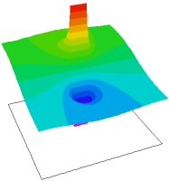

|
plot_test |

  
|
|
plot_test |
|
{ PLOT_TEST.PDE
This example shows the use of various options in plotted output.
The problem is the same as PLATE_CAPACITOR.PDE.
}
title 'Plate capacitor'
select contourgrid=50 { default=40 } surfacegrid=60 { default=40 } elevationgrid=200 { default=120 }
Variables v
definitions Lx=2 Ly=2 delx=0.25*Ly d=0.1*Ly ddy=0.1*d Ex=-dx(v) Ey=-dy(v) Eabs=sqrt(Ex^2+Ey^2) eps0=8.854e-12 eps DEx=eps*Ex DEy=eps*Ey Dabs=sqrt(DEx^2+DEy^2) zero=1.e-15
equations V: div(-eps*grad(v)) = 0
boundaries region 1 eps=eps0 |
 |
start(-Lx,-Ly) Load(v)=0
line to (Lx,-Ly) to (Lx,Ly) to (-LX,Ly) to close
start "Plate1" (-delx/2,-d/2) value(v)=0
line to (delx/2,-d/2) to (delx/2,-d/2-ddy) to(-delx/2,-d/2-ddy)
to close
start "Plate2" (-delx/2,d/2+ddy) value(v)=1
line to (delx/2,d/2+ddy) to (delx/2,d/2) to(-delx/2,d/2)
to close
region 2 { Dielectric }
eps = 7.0*eps0
start(-delx/2,-d/2)
line to (delx/2,-d/2) to (delx/2,d/2) to(-delx/2,d/2)
to close
MONITORS
contour(v)
PLOTS
! Contour plots
contour(v) as "Potential"
contour(v) contours=50 as "More Contours"
contour(v) contours=10 fixed range=(0.4,0.6) as "Fixed Range"
contour(v) levels=0, 0.1, 0.3, 0.5, 0.7, 0.9 as "Selected Levels"
contour(v) zoom(-Lx/2,-Ly/2,Lx,Ly) as "Zoomed Contour"
contour(v) on region 2 as "Region 2 Contour"
contour(magnitude(grad(v))) log as "Field (Log divisions)"
integrate
report integral(magnitude(grad(v))) as "Integral Report"
contour(magnitude(grad(v))) as "Field (NO Log divisions)"
! Surface Plots
surface(magnitude(grad(v))) log as "Field (Log divisions)"
integrate
report integral(magnitude(grad(v))) as "Integral Report"
surface(v) as "Surface(V)"
surface(v) gray as "Surface(V) Gray"
surface(v) gray mesh points=20 as "Surface(V) Gray Mesh"
! Vector plots
vector(dx(v),dy(v)) zoom(-Lx/2,-Ly/2,Lx,Ly) as " Zoomed Field Vectors"
! Elevations
elevation(v, dy(v)*d) from (0,-Ly) to (0,Ly) points=1000 as "1000 Point Elevation" integrate
elevation(normal(grad(v))) on "Plate1" as "Elevation Plot on Boundary " integrate
elevation(magnitude(grad(v))) from (0,-0.9*Ly) to (0,0.9*Ly) log as "LOG Field"
! Grid plots
grid(x,y) paintmaterials as "Mesh Plot"
grid(x,y) paintmaterials nolines as "Materials Plot"
end
Page url: index.html?usage_plotting_plot_test.html